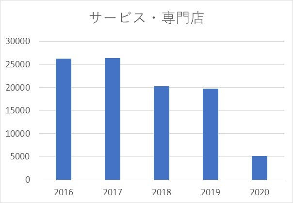

イオン企業分析 其の10
2020/5/22
イオンの企業分析を行っていきます。（10ページ目）
今回は、サービス・専門店事業と国際事業、その他事業について見ていきます。
目次
- 1 サービス・専門店事業
- 2 国際事業
- 3 その他事業
サービス・専門店事業
この事業では、フードコートや四六時中などの飲食店、イオン内のゲームセンターなどの各種エンターテイメントなどが 私にとってのなじみ深いもので、様々な種類の専門店の子会社が存在しています。（詳しくは、こちら）
様々な種類の専門店があるゆえに業績の良しあしが分かりにくいかと思いますが、 どうなのでしょうか？（下図）
見てのとおり、年々営業利益が下がっていることがわかります。 2020年度に至っては、2019年に比べて4分の1程度の営業利益しか得られていないことがわかります。
2020年に関していえば、この事業は最も業績悪化が激しい事業となっており、より改革を行っていくことが必要だと考えられます。 2020年でここまで大きく業績が下がったのは、新型コロナウイルスの影響が大きいと考えられます。
新型コロナウイルスの影響で様々な店舗が臨時休業をする中で、政府の決定では、
不要不急ではない店舗の休業要請であって、イオンでいえばGMS事業といった
食料品店売り場を経営する店舗は営業は行っていました。
しかし、多くのイオンのサービス・専門店事業の店舗は不要不急の外出を伴うため、年度末の売り上げは0に近かったのではないかと
考えられます。（詳しくは、こちら）
そう考えると、2020年度については、仕方のない部分もあるかもしれませんが、 そもそもの営業利益が少ないため、改革をしていく必要があると思います。
かといっても、イオンはただ黙ってみているだけではなく、近年では様々な事業改革を行っているようです。 （詳しくは、こちら）
新型コロナウイルスの影響で我慢の状態が続くかもしれませんが、業績回復に向けて頑張ってほしいところですね。
国際事業
国際事業では、中国・ベトナムを中心に東・東南アジアでの事業展開を行っています。 さらなる利益を得るためには海外進出は必須であるような社会ですが、 イオンは成功できているのでしょうか？（下図）

グラフを見ると、営業利益は年々上昇していることがわかります。
つい5年前までは赤字となっていますが、2018年ごろからものすごい勢いで業績が伸びていることがわかります。
2020年に関しては、2019年よりも3倍ほどの営業利益を得ているため、最近になってようやく日の目を見ているような事業と
なってきたのではないでしょうか？
株主総会でも説明されてましたが、 これからはベトナムへの進出に力を入れていくそうです。
事業報告書によると、中国・マレーシア・ベトナムなどのアジア諸国での経営戦略（価格見直しやデジタル化）が 功を奏したいるようで、今後も大きな期待が持てる事業なのではないでしょうか？
その他事業
イオンでのその他の事業に当たるものは、モバイルマーケティングやデジタル事業になっています。
イオンのサプライチェーンやトップバリューなど、各事業を支えている事業なので、
利益以上のものを生み出していると考えられますが、一応見ていきます。（下図）
グラフを見ると、2016年の営業利益は赤字だったが、そこからは黒字経営を続けているようです。
新型コロナウイルスの影響により、オンラインショッピングの需要が高まっているといわれていますが、
そこで、活躍するのはデジタル事業になっていくのではないでしょうか？
実際に、国際事業での成功の大きな要因はデジタル化にあるため、イオンの多角化戦略を上手くつなげられるような ネットワークを作っていってもらいたいですね。